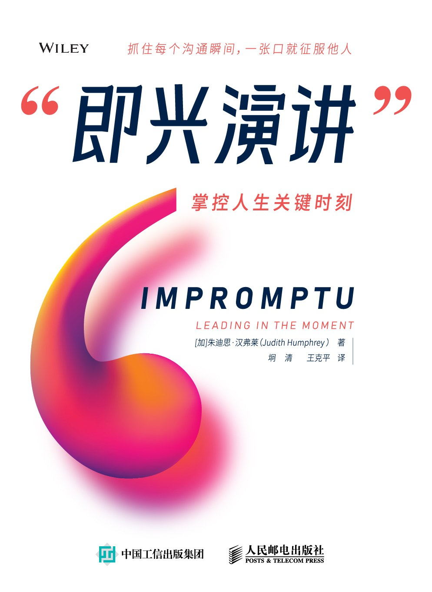

即兴演讲：掌控人生关键时刻
[加]朱迪思·汉弗莱（Judith Humphrey） 著|坰清 王克平 译
推荐序一 即兴演讲不是张口就说
推荐序二 把握时代的机会
译者序
中文版序
开场白 本书的灵魂
引言
第一部分 即兴新时代
第1章 即兴演讲的兴起
第2章 即兴交流的力量
第二部分 即兴思维
第3章 拥有当领导者的意愿
第4章 成为一名听众
第5章 保持真实
第6章 保持专注
第7章 保持尊重
第三部分 领导者讲话脚本
第8章 做好准备
第9章 了解听众
第10章 领导者讲话脚本模板
第11章 突出要点
第12章 提出令人信服的案例
第13章 开始与结束
第四部分 各种场合的即兴演讲脚本
第14章 会议脚本
第15章 求职面试、社交活动、电梯对话脚本
第16章 阐述重点
第17章 敬酒词和致敬词脚本
第18章 即兴讲话脚本
第19章 问答脚本
第五部分 即兴舞台
第20章 即兴讲话排练
第21章 选择语言
第22章 使用即兴技巧
第23章 发现你的声音
第24章 掌握肢体语言
结语 别害怕，准备好
推荐序一 即兴演讲不是张口就说
推荐序二 把握时代的机会
译者序
中文版序
开场白 本书的灵魂
引言
第1章 即兴演讲的兴起
第2章 即兴交流的力量
第3章 拥有当领导者的意愿
第4章 成为一名听众
第5章 保持真实
第6章 保持专注
第7章 保持尊重
第8章 做好准备
第9章 了解听众
第10章 领导者讲话脚本模板
第11章 突出要点
第12章 提出令人信服的案例
第13章 开始与结束
第14章 会议脚本
第15章 求职面试、社交活动、电梯对话脚本
第16章 阐述重点
第17章 敬酒词和致敬词脚本
第18章 即兴讲话脚本
第19章 问答脚本
第20章 即兴讲话排练
第21章 选择语言
第22章 使用即兴技巧
第23章 发现你的声音
第24章 掌握肢体语言
结语 别害怕，准备好